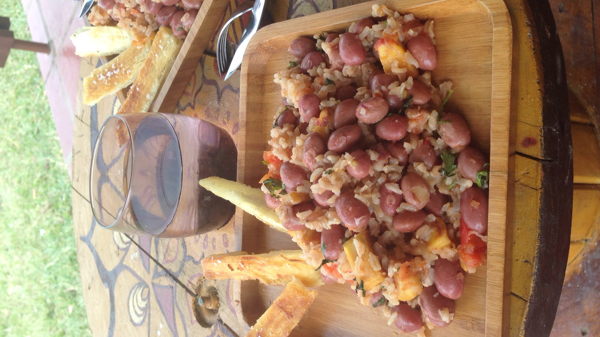

Ensalada de arroz integral y frijoles con yuca frita
Ingredients
2×
- 150 g de arroz integral
- 250 g de frijoles rojos cocidos
- 1 tomate
- 100 g de piña o mango
- cilantro
- zumo de lima
- aceite de oliva
- sal
- 500 g de yuca

Preparación
Paso 1
Cocer 150 g de arroz integral y dejar enfriar.
Paso 2
Mezclar con 250 g de frijoles rojos cocidos, 1 tomate y 100 g de piña o mango en dados, cilantro picado, zumo de lima, aceite de oliva y sal.
Paso 3
Pelar 500 g de yuca, cortarla en bastones, cocerla 15min en agua con sal y freírla o asarla hasta que esté dorada. Servir junto a la ensalada.